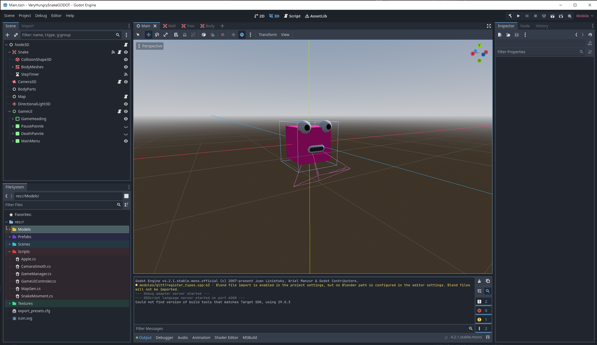

William Miller
Very Hungry Snake - Godot
A remake of my mobile dev project in a different engine: Godot
Godot | C#
Why Godot?

Having used GameMaker Studio at college, and Unity and Unreal Engine at university I wanted to learn and try a new engine. I used Unity for a lot of my uni projects and became the engine I am most comfortable in. However given Unity’s recent decisions I wanted to try a game engine that wasn't tied to a licence. My decision was to try Godot.
Godot is free and open source, I can use the engine how I like and not have to worry about having to pay licensing or anything
if I did end up releasing a project built in Godot. It also has a thriving community and studios turning to use the engine such
as Mega Crit. Blender has become an industry standard being an open source 3D graphics, and I think Godot has a chance to do the
same.
In Godot there are two main choices for scripting language: GDscript and C#, with other options when working in the engine. This
made it appealing when coming over form Unity as I have experience using C# in my projects already and would allow me to begin
working on learning the engine. I plan to learn GDscript in my next Godot project and use a mixture of the two languages in my
next project as Godot does support cross-language scripting.
Same game, Different engine

Having choses to learn Godot the question was what project could I do to learn. I wanted a project that was relatively simple but covered a multitude of different aspects to the engine. So a small mobile game that could cover all these areas. Having built this game once before in Unity I decided I wanted to remake it in Godot, it was a complete game in Unity, a fun little mobile game that I already worked out how all the logic and behaviours worked. I also had a completed and comprehensive Game design document made for the university module I could reference, this let me focus on the engine and understanding it rather than spending a large amount of time troubleshooting the game mechanics and more time making it work for a new engine.
What I did
I began the same way I did with the original project, building out the player and map generation using a similar
structure to the Unity version. I imported the same assets from the original to use and made packed scenes for the
collectibles and colidables, using Groups to make colidable nodes that will kill the snake.
The way the snake moves is the same as the original, stepping on a timer node timeout signal instead of Unity’s coroutines.
However one change I did make was a small optimization with how body pieces move. In the original Unity, when I was prototyping
I moved each body piece up one to where the previous piece was, shuffling the whole body up one.
In the Godot version I changed it so only the rear most piece is moved to behind the head. The body pieces are stored in a
queue as opposed to a list. A body part at the front of the queue dequeued moved to where the head just was and added back
to the end of the queue making the queue be a list of body parts starting from the tail to the head, and when the snake grows
we just add a new body part to the front of the snake not at the tail.
Another difference I found when remaking this game is Unity and Godot have their axis set up differently, where the Z axis is
flipped. This meant when re-building the level generation code I had to take this into account with west becoming east and vice
versa compared to the Unity version. Each of the tiles is using a scene that is referenced in the script and spawned as a child
of the map node.
In Unity I had a preface to us C# events compared to Unity events as I didn't have a need to link the events in the editor
most of the time. This carried over into Godot, using C# events to call up the node tree towards the root node that holds the
game manager script, which in turn holds references of the nodes below it to call on.
Godot has its on version of Unity Events with signals however outside of built in signals on nodes such as Timer and
Button I didn’t use them still in favour of native C# events.
What's next?
Remaking a game I have made previously helped me wrap my head around Godot. It's time to push further ahead and make a new project game in the engine and push the engine and my skills further and try something new. This will start with a game design document and finding an idea that is just out of my current skill reach but still achievable in a reasonable time frame.